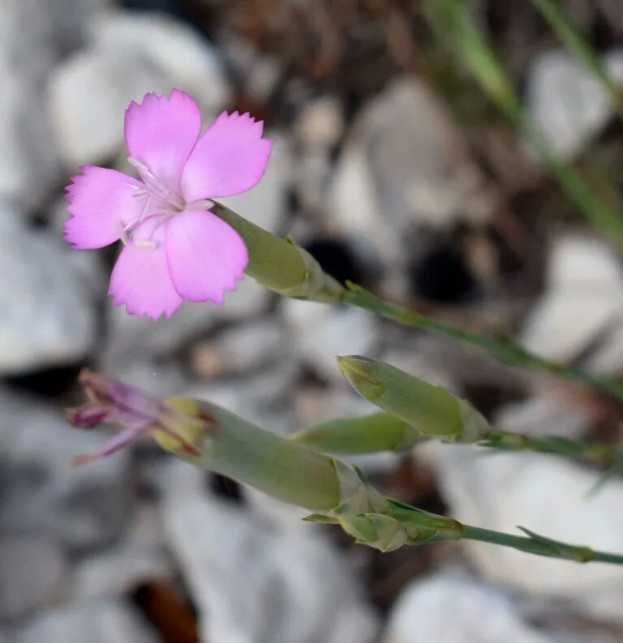

花卉与草本 · 植物界
康乃馨 Dianthus caryophyllus

石竹科多年生草本，花瓣边缘呈锯齿状，色彩柔和，是母亲节的重要象征花，也是世界四大切花之一，常用于花束与花篮。
- 分类
- 门被子植物门纲木兰纲目石竹目科石竹科属石竹属
- 栖息环境
- 地中海沿岸的石灰岩山坡与灌丛，喜凉爽、干燥和充足阳光
- 地理分布
- 原产地中海沿岸，现世界各地广泛栽培，中国云南、广东为主要产区
- 保护级别
- 暂无评估
物种志
康乃馨即香石竹，为石竹科石竹属多年生宿根草本，株高 40–70 厘米，茎直立，节部膨大，全株被白粉而呈灰绿色。叶线状披针形，对生。花单生或数朵聚生，花径 5–8 厘米，花瓣边缘呈不规则锯齿或皱褶，有白、粉、红、黄、紫及复色，具芳香，自然花期 4–9 月，果期 6–10 月。
康乃馨原产地中海沿岸，喜凉爽干燥、阳光充足的环境，耐寒而不耐炎热，夏季高温时生长缓慢。1907 年美国费城的安娜·贾维斯在母亲追悼会上以白色康乃馨表达思念，此后康乃馨逐渐成为母亲节的象征。它是世界四大切花之一，可露地栽培或温室周年生产；花瓣可提取香精，也用于花茶和食品装饰，但花萼与花心味苦，食用前需去除。
形态与习性
- 株高40–70 厘米，茎节膨大
- 花期自然花期 4–9 月，温室可周年开花
- 果期6–10 月，蒴果圆柱形
- 光照喜充足阳光，光照不足易徒长
- 水分喜干燥，忌积水，宜见干见湿
- 土壤疏松、富含钙质的微碱性土壤
- 主要用途切花、花束、提取香精
趣味知识
- 康乃馨是石竹科植物，与石竹、满天星是近亲，花瓣边缘的锯齿是识别特征。
- 1907 年安娜·贾维斯在母亲悼念活动中分发白色康乃馨，被视为母亲节用花的开端。
- 康乃馨是肯尼亚重要的出口花卉，欧洲市场的许多切花来自肯尼亚农场。
- 花茎节部膨大而脆弱，采收和运输时容易折断。